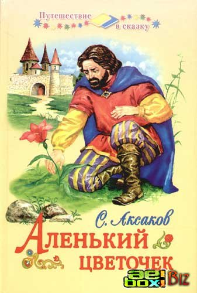
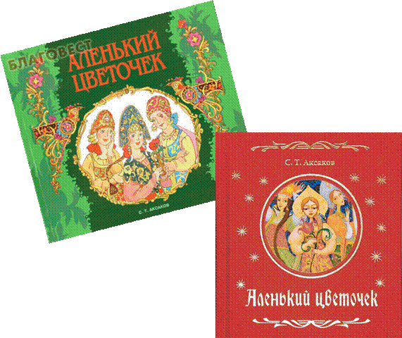

Аксаков, С. Т. Аленький цветочек
Аксаков, С. Т. Аленький цветочек [Текст] : сказка ключницы Пелагеи / С. Т. Аксаков., худож. Е. Д. Петрова. – М.: Дрофа-плюс, 2005. – 64с.: ил. – (Русские классики - детям).

Сказку «Аленький цветочек» записал известный русский писатель Сергей Тимофеевич Аксаков (1791–1859). Он услышал ее в детстве во время своей болезни. Писатель так рассказывает об этом в повести «Детские годы Багрова-внука»: «Скорому выздоровлению моему мешала бессонница… По совету тетушки, позвали один раз ключницу Пелагею, которая была великая мастерица сказывать сказки и которую даже покойный дедушка любил слушать… Пришла Пелагея, немолодая, но еще белая, румяная… села у печки и начала говорить, немного нараспев: „В некиим царстве, в некиим государстве…“Нужно ли говорить, что я не заснул до окончания сказки, что, напротив, я не спал долее обыкновенного?
На другой же день выслушал я в другой раз повесть об „Аленьком цветочке“. С этих пор, до самого моего выздоровления, Пелагея ежедневно рассказывала мне какую-нибудь из своих многочисленных сказок. Более других помню я „Царь-девицу“, „Иванушку-дурачка“, „Жар-птицу“ и „Змея Горыныча“».В последние годы жизни, работая над книгой «Детские годы Багрова-внука», Сергей Тимофеевич вспомнил ключницу Пелагею, ее замечательную сказку «Аленький цветочек» и записал ее по памяти. Впервые она была напечатана в 1858 году и с тех пор стала у нас любимой сказкой.
Краткое содержание сказки:
Жил-был богатый купец, и было у него 3 дочери-красавицы, а меньшая любимее всех. Стал собираться он по торговым делам за море. Позвал дочерей и спрашивает: «Что привезти вам в подарок?» Старшая попросила золотой венец из каменьев самоцветных, чтоб был от них свет; средняя туалет из хрусталю восточного, чтоб смотрясь в него не старилась, а краса прибавлялась; младшая аленький цветочек, краше которого не было бы на свете. Отправился купец в путь. Продает свои товары втридорого, покупает чужие втридешево, «меняет товар на товар со придачею серебра да золота».
Старшей и средней купил он подарки, а младшей нет. Видел он цветочки аленькие, а краше ли они всех на свете не знал. По пути домой напали разбойники. Купец убежал в лес (пусть лучше звери растерзают, чем плен). Шел по лесу и видит: дворец в огне, серебре, золоте. Зашел в него, а там все убрано, богато. Пошел купец гулять по садам диковинным и увидел цветочек аленький, краше которого нет. Сорвал его и в миг появилось чудище страшное, лохматое. Отпустило оно купца домой, но должен был воротиться он или дочь его по своей воле. Дало чудище ему перстень. Купец надел на правый мизинец и дома оказался. Рассказал все дочерям. Дочери: «Пусть та дочь выручает отца, для которой он сорвал аленький цветочек». Младшая дочь надела перстень на правый мизинец и в миг оказалась в дворце богатом. Хорошо ей там жилось, но захотелось чудище увидеть и услышать. Согласилось чудище, но чуть не погубила его Настенька.
Сумела-таки побороть страх свой. И жили дальше они весело и дружно. Но вот приснился Настеньке сон, что отец нездоров. Отпустило её чудище на побывку домой на 3 дня. Нужно было воротится в срок, иначе умрет чудище.
Сестрицы позавидовали, что живет Настенька в богатстве, и перевели они все часы назад и ставни закрыли. В нужный час защемило сердце у Настеньки. Не дождавшись минутки (по домашним часам), вернулась она во дворец. А зверь около цветочка аленького мертвый лежал. «Ты встань, пробудись, я люблю тебя, как жениха своего желанного!» И превратилось чудище в принца молодого: «Полюбила за душу добрую, за любовь мою». (Заколдован он был: злая волшебница прокляла отца и украла принца ещё маленьким). 30 лет он был заколдован. И за это время приезжало 11 девиц, но все убегали. Честной купец дал свое благословение дочери меньшой и молодому принцу. Отправились они под венец, стали жить-поживать, да добра наживать.
